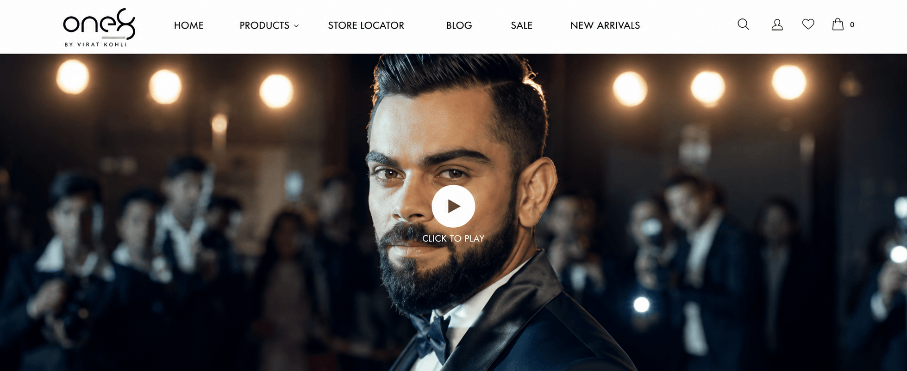
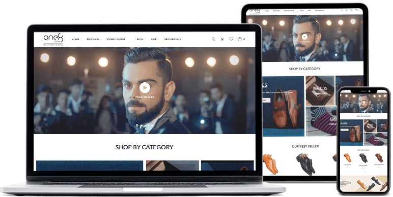
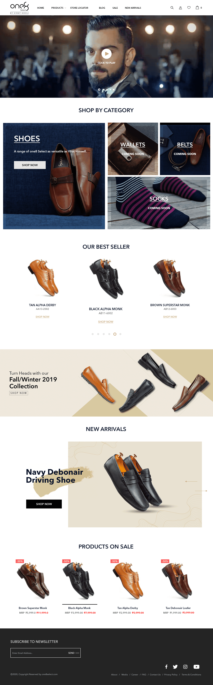
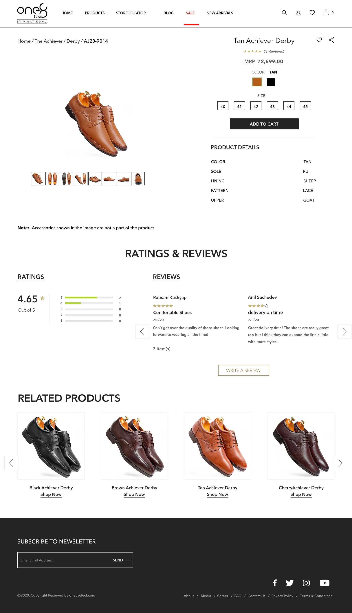
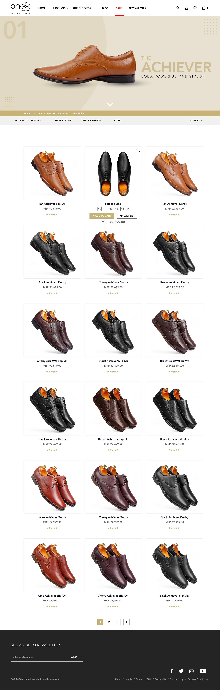

The modern achiever
Style-aware consumers who want formal products to express drive without feeling distant or conventional.
One8 Select · Brand + Commerce

Project overview
One8 Select brought Virat Kohli's ambition for formal footwear and accessories together with AEON Sports India to speak to Indian and international audiences.
Our role connected the entire B2C proposition—from identity, positioning and brand character to product architecture, packaging, launch execution, communication and digital commerce.
Brand positioning
For ambitious people who move between work, occasion and everyday momentum, One8 Select makes polished style feel confident, current and accessible.
Style-aware consumers who want formal products to express drive without feeling distant or conventional.
Celebrity-led aspiration translated into versatile products, navigable choices and attainable premium cues.
The business challenge
Establish a credible identity against long-standing formal-fashion brands while continuously strengthening how the new brand was understood.
Build awareness and desire without losing the practical work of categorisation, affordability, availability and a smooth path to purchase.

Building the brand
Logo, visual tonality and characterisation built a recognisable formal-lifestyle world around the founder's personality.
Brand messaging, foundation campaign and film gave the launch one confident voice across formats.
Segregation, naming, packaging and strategic categorisation made a growing range easier to understand and buy.
Planning and execution connected creative, media, commerce and operational readiness around one market arrival.
The digital growth engine
The digital plan treated discovery and conversion as one connected system: owned commerce, marketplace presence, search visibility and paid reach all reinforced the same proposition.
SEO, SEM, GDN and online advertising create qualified awareness.
Editorial category journeys help shoppers understand styles and use cases.
Product segregation, detail and reviews reduce hesitation at decision time.
The owned website and Amazon maintain direct, dependable paths to sale.
Commerce experience
A restrained interface lets photography, product craftsmanship and Virat's presence do the expressive work while the commerce layer stays direct and useful.



The outcome
A connected brand and commerce foundation aligned perception, communication and purchase—giving One8 Select the consistency required to compete in an aggressively paced market.
A coherent character carries from celebrity storytelling into product and packaging.
Search, media and marketplace activity expand access to the right audience.
Clear product architecture makes affordability, comparison and purchase easier.
Recognisable at launch.Ready for what follows.
More work
View all workLaunching more than a product?